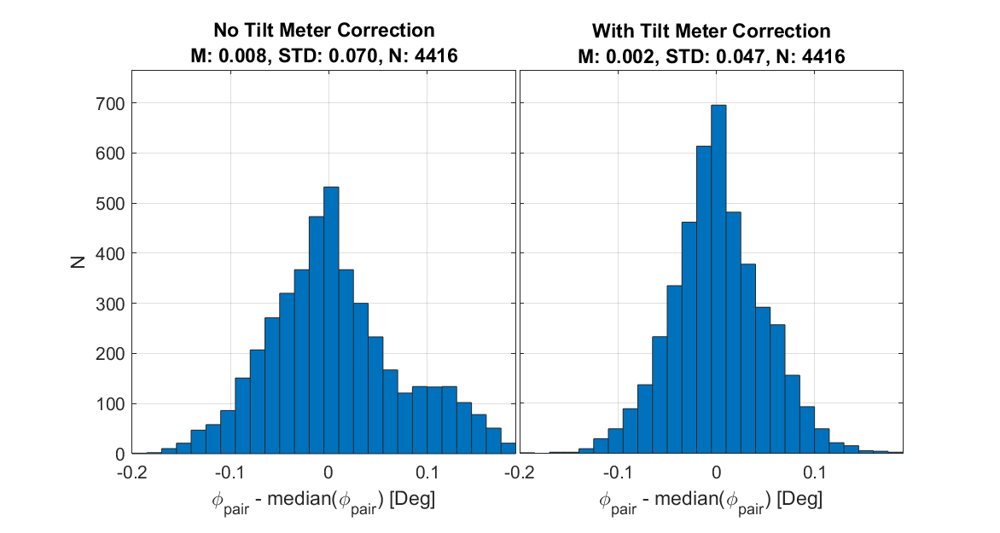
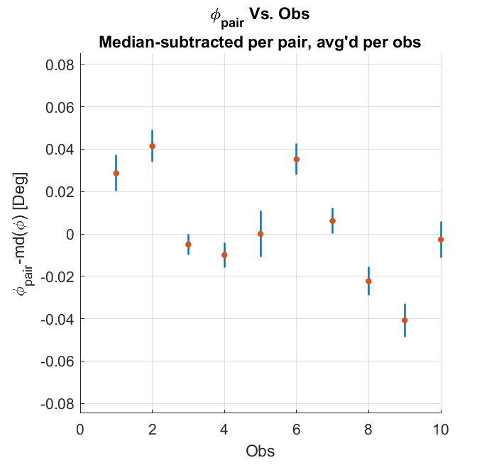

The general approach to converting the RPS data to estimations on the polarization angles and cross-polar response of a given detector is to done in two parts: fit 2D Gaussians to a rasterstet to derive the amplitudes of a modulation curve and then fit a sinusoidal function to the modulation curve to derive the polarization angle and cross-polar response (see Figure 1.1 below).
The Gaussian we fit is done at the timestream level in raw mount coordinates and is of the form:
\begin{equation}
\label{eq:beam}
B(\mathbf{x}) = A e^{(\mathbf{x}-\mathbf{\mu})^T\Sigma^{-1}(\mathbf{x}-\mathbf{\mu})}
\end{equation}
Where $A$ is the amplitude, $\mathbf{\mu} = (Az_0\,\,El_0)$ is the beam centroid, and
\begin{equation}
\Sigma =
\begin{bmatrix} \sigma_{Az}^2& \rho \sigma_{Az} \sigma_{El} \\ \rho \sigma_{Az} \sigma_{El} & \sigma_{El}^2 \end{bmatrix}
\end{equation}
where $(\sigma_{Az},\,\sigma_{El})$ is the beam width, and $\rho$ is the beam ellipticity. The significant difference between this analysis and other analyses involving beams is that we include 13 amplitude parameters to account for each beam in the modulation curve while fitting only a single $Az_0$, $El_0$, $\sigma_{Az}$, $\sigma_{El}$, and $\rho$ parameter across all the beams in a rasterset. This is to mitigate pointing effects from the Roger Effect and to allow good beam centroid fits for rasters during which the RPS angle is orthogonal to a given detector and the SNR on the beam amplitude is low.
Once we have our modulation curve, we could fit a sinusoidal function of the form:
where $G$ is the detector gain, $\zeta$ is the RPS angle WRT gravity, $\psi$ is the detector polarization angle with respect to the source, $\epsilon$
is the detector cross-polar response, and ($n_1,\,n_2$) are nuisance parameters to account for miscollimation of the source rotation axis.
The polarization angle $\psi$ in Equation \ref{eq:modcurve} is a relative measurement and is agnostic to the orientation of the focal plane.
We define an angle $\phi_d$, which is the polarization angle of a detector with respect to the θ=0 axis -- this gives us a set of parameters in cartesian coordinates $(x,\,y,\,\phi_{d})$ which is analogous to the polar set of $(r,\,\theta,\,\chi)$ [See ]. This is done by combining $\psi$ with the angle measured from the telescope's θ=0 axis and the RPS's ζ=0 axis, called $\phi_s$, which is computed through the pointing model.
Where for a given command angle $\zeta$, $\hat{A}$ is the amplitude of the beam fit from Eq. \ref{eq:beam}, $A'$ is the amplitude from the model given some parameters, and $\sigma$ is the uncertainty on the fit beam amplitude $\hat{A}$ given from the matmin fitting function. The priors on all five parameters are flat.
From Eq. \ref{eq:modcurve2}, we can see that the uncertainty on the $\phi_d$ is sourced by the three terms $\zeta_{grav}$, $\psi$, and $\phi_s$.
$\sigma_{\zeta}$ describes mechanical or calibration uncertainties arising from the rotation stage;
$\sigma_{\psi}$ is driven by both sample variance in the detector timestreams and systematics involved with the coupling efficiency between the telescope and the source;
and $\sigma_{\phi s}$ summarizes any errors propagated through the parameters input to the pointing model.
Note: Our mainline CMB analysis uses detector polarization angles in terms of χ for inputs; I present angles in terms of $\phi_d$ here because these angles are easier to interpret since detectors line up with ~0/90° as opposed to χ which has an additional dependence on θ.
Before committing these to the pipeline, these angles will converted to their final χ-angle values via:
The pair-combined Stokes vector is the sum of the rotated vectors from A and B detectors as well as two additional terms to account for cross-polar response which are orthogonal to their respective A/B terms and scaled by $\epsilon$
We acquire beam maps of a given detector by scanning over the RPS in 9°Az×2°El rasters at 1.5°/s in Az and 0.1° steps in El -- all with the RPS fixed at a given angle WRT gravity.
We get modulation curves by completing multiple rasters over the same part of the focal plane with the RPS commanded to a different angle for each raster, which we call a rasterset.
Each rasterset includes 13 rasters with the RPS rotated from -180° to 180° in 30° increments and takes about 40 minutes to complete -- compare to a full Moon schedule which takes a roughly an hour.
A typical RPS schedule run by GCP consists of 19 rastersets where the first rasterset starts with an El offset of -12.5° and steps in 1.5° between each rasterset to ensure there are no gaps in coverage over the focal plane [see Fig. 1.1 of for an example].
In this posting, I'll typically refer to the RPS data in terms of rasters, rastersets, or observations. Each observation typically consists of 3 schedules and generally maps beams across the entire focal plane at a single DK angle.
Aside from the main suite of science-grade RPS schedules, we also completed a number of cross check schedules. These schedules are mostly identical to the our main schedules except we adjust one or two parameters depending on the particular systematics we want to probe. We categorize the schedules by their schedule number where the most recent RPS science schedule is Type-5 and proceeding schedule types denote cross-check schedules[1]. A list of the observations we collected in Jan 2022, their schedule types and their uses is shown in Table 1.1. For the 2022 observing season, we acquired 10 science-grade observations at 9 different DK angles along with ~1 full week of diagnostic observations. You can find more information on the data collected at the RPS Landing Page.
Schedule Type
Obs. Length (Hrs.)
Total Time (Hrs.)
Adjusted Parameter
Systematics Probed
5
13.5
420.4
None
Standard RPS Observations
6
13.6
13.6
RPS angle -180 to 180 Minus DK angle
Importance of nulling mod curve
7
1
70.7
Target Moon, only one raster
Standard Moon Observations
8
0.1
0.5
No Mount Movement
Rotation stage operational checks
9
0.5
22.9
Quick-turnaround 1°×1° single-pair map
System stability
9.1
0.3
3.5
1°×1° map, 45° increments
σ-Angle vs. Mod Curve Samples
9.2
1.1
11.0
1°×1° map, 10° increments
σ-Angle vs. Mod Curve Samples
9.3
0.5
4.6
1°×1° map, No Homing between obs.
RPS homing precision
10
3.1
9.2
RPS fixed & boresight rotated instead
Pointing model validation
11
3.2
9.2
Rasters 27° in Az
Short- & long-timescale mirror deformation
For this posting, we'll be focusing on polarization parameters derived from the standard Type-5 datasets which cover the entire focal plane.
In section 4, we'll also look at data from Type-9 schedules which mapped only a single pair at the center of the focal plane for diagnostic purposes.
Estimates of Polarization Angles and Cross-Polar Efficiency
In this sections, I show the per-detector and per-pair polarization angles angles and cross-polar efficiencies.
The angles are shown as $\phi_d$ which include corrections for the tilt meter and per-rasterset mirror
tilt/roll fits but which also include the uncertainties that propagate through the rotation stage and
pointing model as well as the modulation curve fits as discussed in the previous section.
For cross-polar response estimates, I allow the parameters to go negative.
While negative $\xpol$ isn't physical, doing so prevents the mean from being biased away from zero in the
event that we don't have sufficient constraining power to measure it (which is the case for some
detectors).
I perform a series of statistical cuts on the data to exclude poor fits. Further, only detector pairs that are included in B18 were allowed to pass. See §A.1 for more details.
In the pager below, I show this year's polarization angles (in terms of $\phi$, not χ) and cross-polar efficiency per channel and per-observation. Because modules on MCE0 are clocked 90° WRT the rest of the focal plane, I differentiate detectors based on their orientation aligning with 0° or 90° instead of A vs. B. Lastly, these plots only include detector pairs used in BK18.
Scatter plot of polarization params as a function of GCP Channel number. Top/Middle: Detectors are separated by their orientation along the theta=0 axis. Bottom: subtracted to show orthogonality in the case of $\phi$.
The black dashed lines indicate the MCE's.
The colors differentiate observations.
We can see that the angles are mostly the same with the largest variation being between different tiles. A particularly interesting thing to note is that we see a consistent non-orthogonality between detectors in a given pair of 0.7°±0.32° (MCE0 is at -0.7 in Fig 2.1 because of the 90° clocking of the modules).
The corner plots below show the fit parameters plotted against each other to look for any strong correlations between parameters.
Corner plots of parameters estimated from Eq: \ref{eq:modcurve2}. Each dot represents an estimate per-detector which has had its median over all 10 observations subtracted. The data are colored to differentiate observations where dark blue indicates observations in early January and yellow being observations taken in late January.
The pager below shows the per-pair estimates averaged over all 10 observations (9 Dk angles + 1 repeat).
Scatter plot of polarization params as a function of GCP Channel number. Top/Middle-Top: Detectors are separated by their orientation along the theta=0 axis. Middle-Bottom: subtracted to show orthogonality in the case of $\phi$. Bottom: "pair-difference" estimates.
The black dashed lines indicate the MCE's.
The colors differentiate observations.
Another thing to note is that we can see that MCE3 has only a few detectors pass cuts. For BK18, less than 100 pairs from MCE3 (compared to ~200 for the others) and only ~30% of these pass my cuts on aluminum.
Consistency and Statistical Uncertainty
I first take a look at how this dataset compares to the RPS measurements I took back in 2018 and also how it compares to the parameters that were were used for BK18. For the BK18 phis, I just do the reverse of Eq. \ref{eq:chiangle}: $\phi = \chi + \theta_{ref}$ where $\chi$ and $\theta_{ref}$ are p.chi and p.chi_thetaref from the FP data file respectively.
Scatter plot of polarization params as a function of GCP Channel number. Top/Middle: Detectors are separated by their orientation along the theta=0 axis. Bottom: subtracted to show orthogonality in the case of $\phi$.
The black dashed lines indicate the MCE's.
The colors differentiate observations.
We already have a qualitative confirmation that the polarization properties over the years have remained relatively unchanged (even after swapping out a window).
The pager below shows direct comparisons between the 2018, and the B18 FPU 'obs' data. For 2018 vs. 2022, I compare the years per-pair where the pairs are averaged over all 4 observations for 2018 and all 10 observations for 2022. For 2022 vs. B18 FPU Data, the 2022 data is averaged over all 10 observations. For 2022 vs. 2022, I compare the averages of two subsets of 5 observations each with no repeating observations between the two sets.
The data between 2018 and 2022 are very consistent -- the major differences (~0.1deg shift, higher variance) can be well explained by the 2018 data having a bad tiltmeter calibration .
For 2022 vs. B18 'Obs', we see an offset of -0.730 degrees -- this is the angle we would expect if we fit a global rotation angle to B18 right now, assuming map coverage, detector weighting, and galactic foregrounds were negligible. That said, all of these factors may affect the actual angle we see in the real data to some degree (pun intended), so it's not useful to focus too much on it.
Finally for the two RPS2022 subsets of data, we can see that the data is self-consistent to within 0.027°. I take this value as the upper limit of the statistical uncertainty on the angle.
Systematics
Tilt Correction
When computing the polarization angles, we account for the tilt by subtracting it from the rotation stage angle at every command angle. In the image below, I show histograms of the per-pair polarization angles with the per-pair median angle subtracted so that only the scatter on the angles is presented. We can see that the tilt correction improves the standard deviation of the distribution by 0.023° or ~30%.

Detector Pair Anticorrelations
If we plot the detector pairs against each other within a given rasterset, we can see anticorrelation between them which is consistent between the Standard Type 5 data and the Type 9 data across the whole campaign.
In the pager below, I show the covariance and correlations as a function of DK angle. With the exception of DK=0 in the type 5's, I get a covaraince of ~-0.005°2 and a correlation of ~-0.6.
By definition, the slopes of the modulation curves for a Pol0 and Pol90 detector are 90° out of phase which means that, for a change in angle in the mod curve, the change in amplitude for one detector would be positive and the other would be negative. Thus, we can imagine that if the signals of Pol0 and Pol90 detectors were correlated in some way, we would expect the effect on the angles to be anticorrelated.
Below is a plot of the Pol 90 vs. Pol 0 mod curve fractional residuals (i.e. $\left(A_{model}-A_{data}\right)/A_{model}$) which shows that some fraction of the noise in the modulation curves is correlated. Each point is the fractional residual for one detector pair at one of 13 data points in the modulation curve. In the plot, I only show data where the amplitudes along the mod curve are equal between Pol 0 and Pol 90 -- this ensures that the uncorrelated noise in Pol0 and Pol90 are roughly equal and makes correlations easier to see.
In an old posting , I showed that RPS beam maps and modulation curves were dominated by noise that scaled with the amplitude -- likely a result from some systematic in the demodulation routine.
Below, I show that fitting sims of mod curves with only correlated amplitude-scaling noise produces anticorrelations in detector pairs at a similar level as seen in the real data.
I create modulation curves with known input parameters and add some white noise $N$ that is scaled by the modulation curves for both a detector with an angle of 0°, $A_0$, and one with an input angle of 90°, $A_{90}$.
Because I want the noise to be correlated, I use the same N for both mod curves for a given realization. I use a noise amplitude of 1.3% which I calculated from real modulation curves, though I find that changing the noise amplitude only changes the covariance while the correlation remains the same.
I then fit my angle and 4 other parameters to each realization. Below, I plot $\phi_0$ vs $\phi_{90}$ for these sims and find a correlation of ~-0.6 which is consistent with the real data within 10%.
Overall Pair Angle fluctuation per-Obs
We see fluctuations on the per-pair angle averaged over all pairs in a given observation of ~0.04°.
Because we have a ~1.5 degree spread in angle across the focal plane, a shift of O(0.04°) is easy to miss unless you subtract the median angle for that pair across all observations before averaging across pairs within a single observation.
The plot below shows the $\phi_{pair}$ median-subtracted per-pair and then averaged per-observation. The error bars are the 1σ standard deviations of the median-subtracted distributions.

The major question that needs to be answered is whether we are confident that the value these angles average down to is the right one. Perhaps it would be best to include this 0.04° fluctuation in our systematic uncertainty just to be safe?
So far, I have not been able to find any correlations with these offsets that would point to a particular systematic (correlating with DK angle, for instance).
Appendix
Channel Cuts
Channel cuts of 24016
Cut Param
Cut Chans
% Cut
Unique
az_cen
867
0.0361
0
el_cen
867
0.0361
0
xres
2861
0.1191
12
yres
2870
0.1195
5
xerr
3882
0.1616
7
yerr
3861
0.1608
6
agof
76
0.0032
13
phi_err
4488
0.1869
81
phi_medsub
4433
0.1846
438
tfpu_mean
1074
0.0447
0
tfpu_std
1436
0.0598
186
n1
1096
0.0456
14
n2
999
0.0416
4
No Pair
1971
0.0821
1971
Total
8248
0.3434
Full Y Vs. X pager
Modulation Curve Residuals
Footnotes
Click on the number to return to the main text.
[1]Example: a standard RPS schedule (type-5) at DK=0 is 8_ffflat_rps_05_dk000_XXX.sch and a stability checking Type-9 schedule at DK=45 would be 8_ffflat_rps_09_dk045_XXX.sch where XXX is the iteration number.
[2]This is strictly speaking in the geometrical sense. I plan to discuss differential reflection of polarization due to the fact that the mirror is aluminum in another posting.
Code
Below is a list of code that was used for this analysis. The code is committed to the pipeline and can be found in the analysis/beammap/ directory.